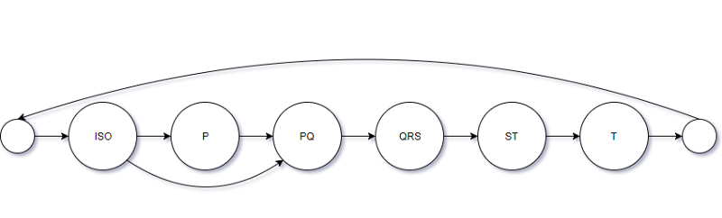

Models¶
This is a place where ECG models live. You can write your own model or exploit provided models.
We have two built-in models suited to classify whether ECG signal is normal or pathological, and a model to annotate segments of ECG signal (e.g., P-wave).
DirichletModel¶
This model is used to perform ECG classification. However, instead of predicting class probabilities themselves, the model predicts parameters of the Dirichlet distribution over these probabilities. This is done in order to get model’s confidence in its prediction, which varies from 0 (absolutely sure) to 1 (absolutely unsure). You can read more about the model in this article.
The high-level architecture of the network is shown in the figure below.

How to use
import cardio.dataset as ds
from cardio import EcgDataset
from cardio.dataset import F, V
from cardio.models.dirichlet_model import DirichletModel, concatenate_ecg_batch
eds = EcgDataset(path='./path/to/data/', no_ext=True, sort=True)
gpu_options = tf.GPUOptions(per_process_gpu_memory_fraction=0.5, allow_growth=True)
model_config = {
"session": {"config": tf.ConfigProto(gpu_options=gpu_options)},
"input_shape": F(lambda batch: batch.signal[0].shape[1:]),
"class_names": F(lambda batch: batch.label_binarizer.classes_),
"loss": None,
}
dirichlet_train_ppl = (
ds.Pipeline()
.init_model("dynamic", DirichletModel, name="dirichlet", config=model_config)
.init_variable("loss_history", init_on_each_run=list)
.load(components=["signal", "meta"], fmt="wfdb")
.load(src='./path/to/taret/', fmt="csv", components="target")
.drop_labels(["~"])
.rename_labels({"N": "NO", "O": "NO"})
.flip_signals()
.random_resample_signals("normal", loc=300, scale=10)
.random_split_signals(2048, {"A": 9, "NO": 3})
.binarize_labels()
.train_model("dirichlet", make_data=concatenate_ecg_batch, fetches="loss", save_to=V("loss_history"), mode="a")
.run(batch_size=100, shuffle=True, drop_last=True, n_epochs=100, lazy=True)
)
train_ppl = (eds >> dirichlet_train_ppl).run()
HMModel¶
Hidden Markov Model is used to annotate ECG signal. This allows to calculate a number of parameters important for diagnosing. This model allows to detect P and T waves; Q, R, S peaks; PQ and ST segments.
It has a total of 19 states, which makes a good compromise on complexity versus performance of the model. There will be 3 states for the ISO, P-wave, and QRS-complex models; 2 states for the PQ and ST segment models; 6 states for the T-wave. The mapping of them to the segments of ECG signal can be found in cardio.batch.ecg_batch_tools submodule.
Also, as you can see in the picture below, we introduce direct transition from last ISO state to first PQ state, thus enabling possibility of absent P-wave.
How to use
from hmmlearn import hmm
import cardio.dataset as ds
from cardio import EcgBatch
from cardio.dataset import B, V, F
from cardio.models.hmm import HMModel, prepare_hmm_input
model_config = {
'build': True,
'estimator': hmm.GaussianHMM(n_components=19, n_iter=25, covariance_type="full", random_state=42, init_params='mstc', verbose=False),
}
eds = EcgDataset(path='./path/to/data/', no_ext=True, sort=True)
hmm_train_ppl = (
ds.Pipeline()
.init_model("dynamic", HMModel, "HMM", config=model_config)
.load(fmt='wfdb', components=["signal", "annotation", "meta"], ann_ext='pu1')
.cwt(src="signal", dst="hmm_features", scales=[4,8,16], wavelet="mexh")
.standardize(axis=-1, src="hmm_features", dst="hmm_features")
.train_model("HMM", make_data=partial(prepare_hmm_input, features="hmm_features", channel_ix=0)))
.run(batch_size=20, shuffle=False, drop_last=False, n_epochs=1, lazy=True)
)
train_ppl = (eds >> hmm_train_ppl).run()
FFTModel¶
FFT model learns to classify ECG signals using signal spectrum. At first step it convolves signal with a number of 1D kernels. Then for each channel it applies fast fourier transform. The result is considered as 2D image and is processed with a number of Inception2 blocks to resulting output, which is a predicted class. See below the model architecture:

How to use
We applied this model to arrhythmia prediction from single-lead ECG. Train pipeline we used for the fft model looks as follows:
import cardio.dataset as ds
from cardio import EcgDataset
from cardio.dataset import F, V
from cardio.models.fft_model import FFTModel
def make_data(batch, **kwagrs):
return {'x': np.array(list(batch.signal)), 'y': batch.target}
eds = EcgDataset(path='./path/to/data/', no_ext=True, sort=True)
model_config = {
"input_shape": F(lambda batch: batch.signal[0].shape),
"loss": "binary_crossentropy",
"optimizer": "adam"
}
fft_train_ppl = (
ds.Pipeline()
.init_model("dynamic", FFTModel, name="fft_model", config=model_config)
.init_variable("loss_history", init_on_each_run=list)
.load(fmt="wfdb", components=["signal", "meta"])
.load(src='./path/to/taret/', fmt="csv", components="target")
.drop_labels(["~"])
.rename_labels({"N": "NO", "O": "NO"})
.random_resample_signals("normal", loc=300, scale=10)
.drop_short_signals(4000)
.split_signals(3000, 3000)
.binarize_labels()
.apply(np.transpose , axes=[0, 2, 1])
.unstack_signals()
.train_model('fft_model', make_data=make_data, save_to=V("loss_history"), mode="a")
.run(batch_size=100, shuffle=True, drop_last=True, n_epochs=100, prefetch=0, lazy=True)
)
train_ppl = (eds >> fft_train_ppl).run()
API¶
See Models API